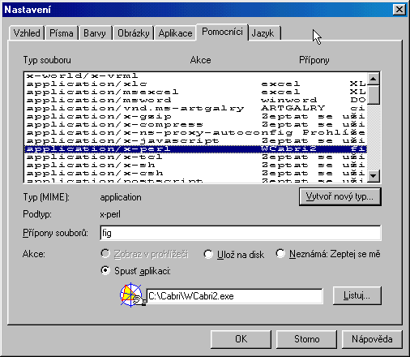
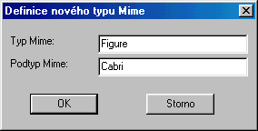

Jak pou�ívat pøíklady
z Cabri Geometrie v
Netscape Navigatoru
Obrázky, v jejich� levém horním rohu naleznete tento symbol  jsou pøíklady provedené v prostøedí Cabri Geometrie II.
jsou pøíklady provedené v prostøedí Cabri Geometrie II.
Pøedstavují soubory typu FIG, které se prohlí�ejí pøímo v programu Cabri.
Pøíklady se prohlí�ejí pohyblivé (tedy stoprocentnì vìrnì).
K zobrazení tìchto pøíkladù potøebujete mít nainstalován program Cabri Geometrie II pro Windows.
Pokud jej nemáte, mù�ete si ZDE
stáhnout z Internetu jeho demoverzi (verzi reader), která k prohlí�ení staèí.
Pro snadnìjší orientaci v programu si stáhnìte jeho èeskou verzi. Zde je k dispozici soubor Cesky.cgl, ktarı si ulo�te do stejné slo�ky, kam jste nainstalovali Cabri. Po prvním spuštìní Cabri kliknìte na nabídku Languages a zvolte jako soubor jazyka Cesky.cgl. Pøi ukonèení práce s programem si zvolte èeštinu jako implicitní jazyk a ukázky z vıuky se budou spouštìt ji� v èeském prostøedí.
Demoverze zabere asi 3MByte na pevném disku a funguje pod Windows 3.1 i pod Win95. (existují i verze
pro MacIntosh, DOSovská verze programu se však pro naše úèely nehodí)
Demoverzi je do Windows tøeba øádnì nainstalovat.
Spuštìní prohlí�ení
Najeïte ukazatelem myši na symbol Cabri a ve chvíli, kdy se kurzor zmìní v ruèku a ve stavovém øádku prohlí�eèe se objeví :"Zobrazit v Cabri II"
na tento symbol kliknìte. Poté se otevøe pøipravenı FIG soubor v programu Cabri geometrie II.
Nastavení velikosti okna
Pokud se Vám obrázek otevøel jako okno, maximalizujte jej pøes celou obrazovku .
Pøitom se obrázek mù�e posunout, tak�e není vidìt celı. Pro opravu této
chybièky volte menu Soubor/Pùvodní obrázek a potvrdit Ano.
(s obrázkem lze té� pohybovat myší pøi stištìné klávese CTRL)
Po prohlédnutí pøíkladu zavøete okno Cabri (pøitom volte Ulo�it / Ne).
Potí�e pøi prohlí�ení obrázkù Cabri
Prohlí�eè Netscape Navigator nebere zpravidla informace o asociovanıch souborech z Windows, ale je nutno v nìm specielnì nastavit cestu k programu, ve kterém se má dotyènı typ souboru spouštìt.
Postup vytvoøení asociace
- Vyberte z nabídky Volby/Obecná nastavení (General preference).
- Zobrazte si kartu Pomocníci (Helpers)
- Zkontrolujte, vyskytuje-li se v seznamu nìjakı øádek s pøíponou fig

Jestli�e tento øádek existuje, zkontrolujte zda je zatr�eno"spustit aplikaci" a jestli je správnì nastavena cesta k programu Wcabri2d.exe (popø Wcabri2.exe). Jestli�e máte pochybnosti, kliknìte na tlaèítko "Listuj..." a najdìte program Cabri sami.
Øádek s pøíponou fig neexistuje
V tomto pøípadì je tøeba vytvoøit novou asociaci. Kliknìte na tlaèítko "Vytvoø novı typ" (Create new asociations).
Zobrazí se �ádost o zadání typu a podtypu MIME. Sem zapište struènı popis asociace napø:

Takto vytvoøíte novı øádek. Nyní vpište do pole Pøípony souborù (extensions) pøíponu fig. Zaškrtnìte políèko Spus� aplikaci a pomocí tlaèítka Listuj ... (Browse) naleznìte soubor WCabri2.exe .
Nyní by ji� mìlo zobrazení ukázek v Cabri. Jestli�e zobrazení ukázek v Cabri stále èiní potí�e, zkuste prohlí�eè vypnout a znovu spustit a zkontrolujte znovu nastavení asociací.
Jiné chyby mù�e zpùsobovat chybnì nainstalovanı , nebo momentálnì nakonfigurovanı systém.
Nìkdy pomù�e reset poèítaèe - zvláštì
kdy� pøíklady ji� døíve fungovaly.
Pokud chyby pøetrvávají, zkontrolujte asociaèní soubory ve Windows. Podrobnı návod naleznete zde. Druhou variantou je vımìna prohlí�eèe za novìjší verzi, popøípadì za prohlí�eè pøebírající asociace pøímo ze systému.